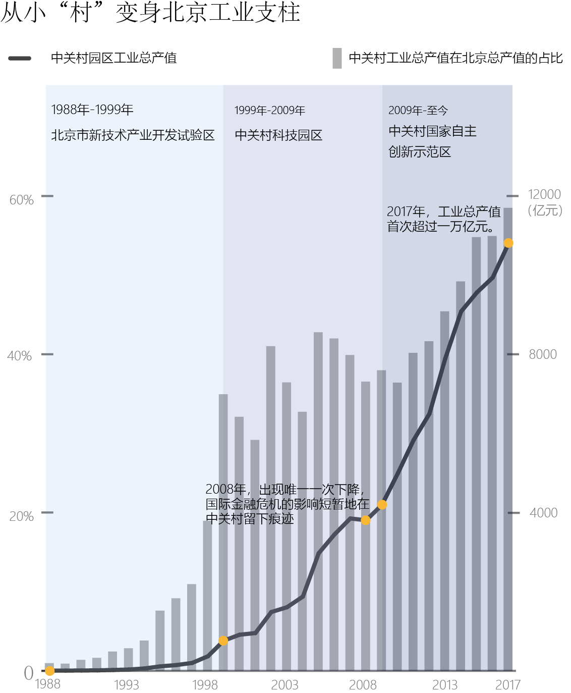
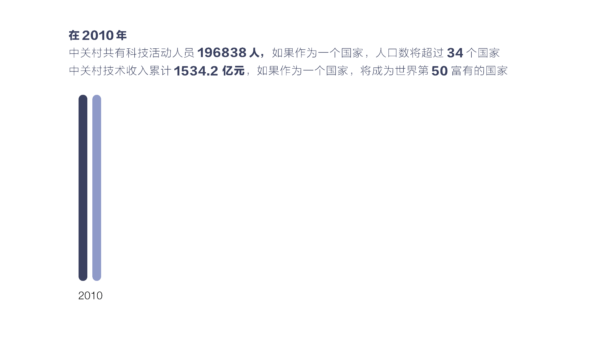
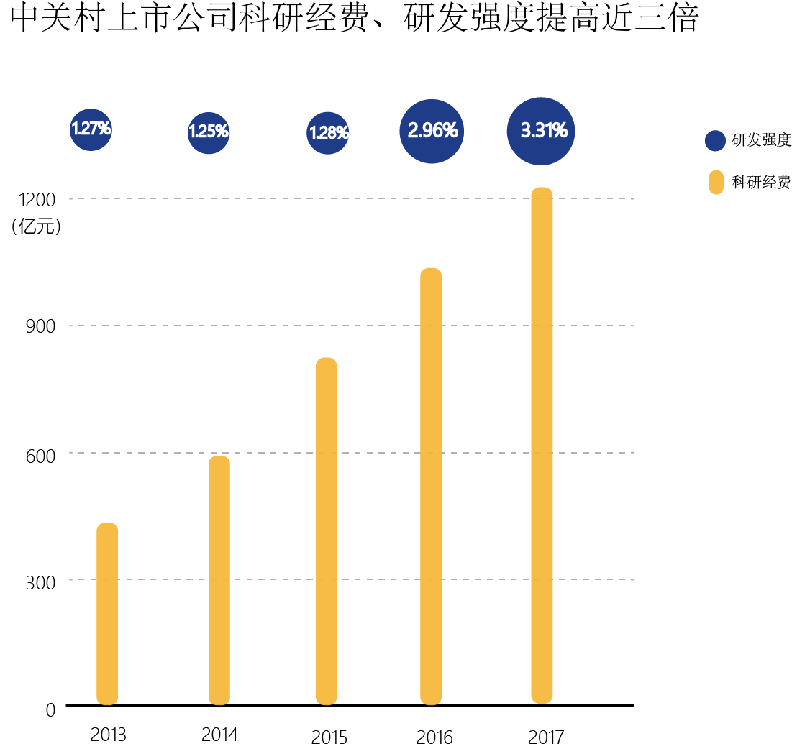

其实，与很多人唱衰中关村的语调不同，数据显示，从1988年开始，中关村的工业总产值一直保持上升趋势，2017年达到10796亿元，其在北京规模以上工业总产值的占比从1988年的0.9%飞升到58.5%，成为首都工业的巨大支柱。

1978年3月，邓小平明确指出，科学技术是第一生产力，知识分子是工人阶级的一部分。中关村地区广大科技人员感受到"春天"的来临，燃起科技报国的激情。从那时起，一大批科技人员走出科研院所和高等院校，创办民营高科技企业，形成了“中关村电子一条街”。
1988年5月，国务院批准以中关村地区为中心，在北京市海淀区划出100平方公里左右的区域为北京市新技术产业开发试验区。1992年的冯军，用220块租下了中关村四海电子市场的半个柜台，后来他给公司取名“爱国者”，他身后的电子市场曾是中关村最接地气的活力所在。1995年的张树新夫妇，成立了北京瀛海威信息通信公司，并将“中国人离信息高速公路还有多远，向北1500米”的广告牌竖在了中关村门口，宣告互联网降临中国。

1999年6月，国务院同意关于加快建设中关村科技园区的意见。同年8月，北京市新技术产业开发试验区正式更名为中关村科技园区。
越来越多的公司成立，全国各地的人们都纷纷赶来这块试验田，由此带来了高涨的租金、火爆的市场、旺盛的人气。中关村赢得了“中国硅谷”的盛名，但鱼龙混杂的人员构成，使得它渐渐堕落成了骗子大本营。真水货、假内存、翻新机，这里的骗术令人防不胜防。同时，千禧年前后，随着互联网技术的飞速进步，电商开始冲击线下销售模式。2001年中国加入WTO，贸易壁垒由此降低、大量国外品牌涌入，国际竞争加剧。在这两个双重夹击下，炒货倒卖的粗放发展走到了尽头，中关村原有的生存模式难以为继。2003年的非典，让京东转型下定决心转型线上市场，成立京东商城。关闭潮、转型潮向中关村汹涌袭来。
2009年3月,国务院明确中关村科技园区的新定位是国家自主创新示范区，作为中国第一个国家级高新技术产业开发区、第一个国家自主创新示范区、第一个国家级人才特区，它的目标是成为具有全球影响力的科技创新中心。
战略性新兴产业成为中关村寻找的新出路。如今中关村形成了电子与信息、先进制造技术、新能源与高效节能技术、生物工程与新医药、新材料及应用技术、现代农业技术动植物优良新品种、航空航技术、环境保护技术、核应用技术、海洋工程技术十大领域，加上与上述十大领域配套的相关技术产品，以及适合首都经济发展特点的其他高新技术及其产品，共十一大类。从2010年至2017年，电子与信息、先进制造技术、新能源与高效节能技术始终为产值最大的三个领域。
中关村产业园各领域工业总产值占比及数量变化
从2013年起，电子与信息不再是中关村的领头产业，先进制造技术、新能源与高效节能技术的工业总产值占比不断上升，成为中关村产业转型升级后的主要支柱。我们已不能用“电脑城”概括这片土地。
与此同时，中关村发家的电子与信息产业也在进行着自我升级。科技活动人员数量不断攀升，2017年占到年末总从业人员的35.6%。技术收入也一直上升，2017年占总收入的24.8%，是第一大收入来源。
从电脑城到技术研发中心——电子与信息产业的自我升级

技术的升级得益于大量的科研投入。2017年，中关村上市公司研发费用合计达到1220亿元，平均研发强度远高于A股公司的平均研发强度（1.48%），近三成中关村上市公司（78家）研发强度超过10%，达到国际较高水准。创新研发投入对于中关村上市公司经营质量提升具有重要推动作用。

即使问一个老北京“中关村”在哪，他很大可能还是将你指向海淀区的“中关村”地铁站下。其实，中关村早已不是那块狭隘的地理概念。从1999年起，中关村的范围就在外延，从北京市新技术产业开发试验区，到中关村科技园区，再到中关村国家自主创新示范区，中关村的范围也一路由海淀园，拓展到昌平园、顺义园、房山园等17个园区，形成"一区多园"的发展格局。
如今的中关村或许更像一个品牌，从海淀区巴掌大的一块区域，覆盖到整个首都。
三十年前，很多怀着梦想的年轻人站在中关村的路口，为回答“中国人离信息高速公路还有多远”的时代疑问，做出自己的尝试的探索。在涌向中关村的大潮中，有人收获成功和财富，也有人制造混乱与欺诈。三十年后，中关村不断扩张，“向北1500米”具体在哪里已经无法说清。我们不知道的数据背后，是中关村从“电脑城”向战略性新兴产业园的转型升级。
数据来源：中关村国家自主创新示范区官网、《2018年中关村上市公司竞争力报告》
第二小组：肖文舸、陈勇华、潘雯智、赵博、尹伯昊